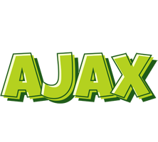

Python is a high-level, general-purpose programming language. Its design philosophy emphasizes code readability with the use of significant indentation. Its language constructs and object-oriented approach aim to help programmers write clear, logical code for small- and large-scale projects

Java is a high-level, class-based, object-oriented programming language that is designed to have as few implementation dependencies as possible.

C# is a general-purpose, multi-paradigm programming language. C# encompasses static typing, strong typing, lexically scoped, imperative, declarative, functional, generic, object-oriented, and component-oriented programming disciplines.

R is a programming language for statistical computing and graphics supported by the R Core Team and the R Foundation for Statistical Computing. Created by statisticians Ross Ihaka and Robert Gentleman, R is used among data miners and statisticians for data analysis and developing statistical software.